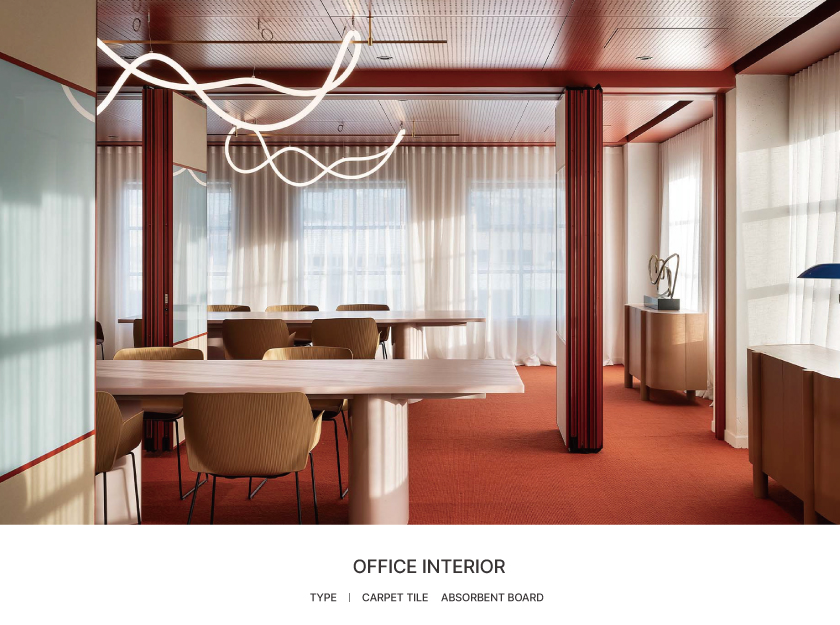
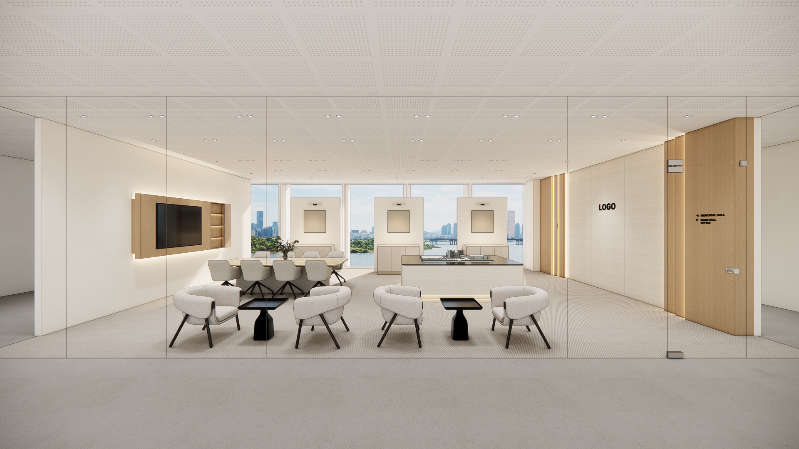
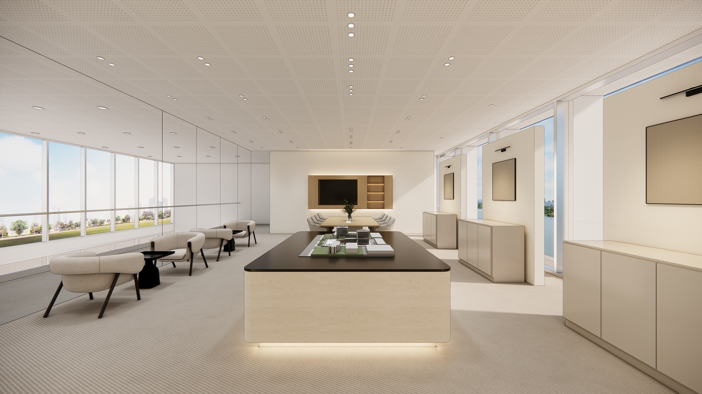
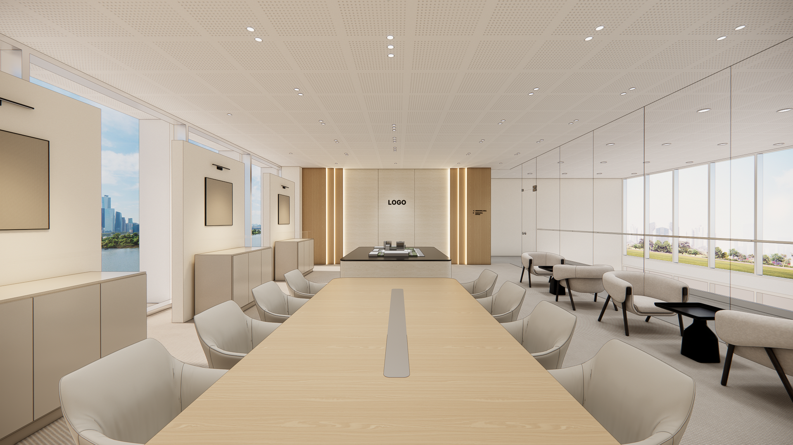
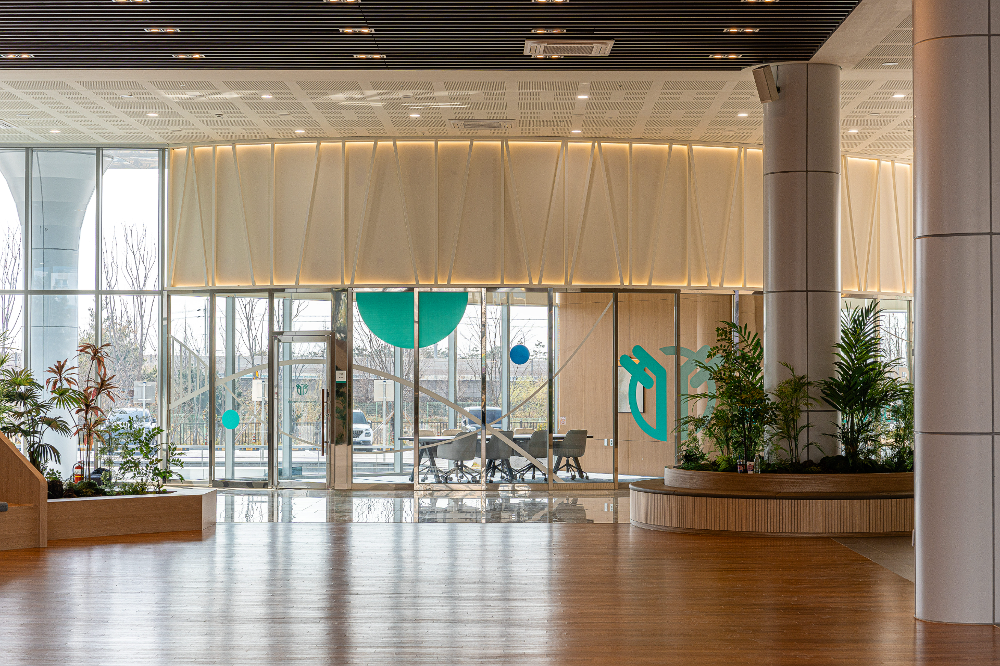
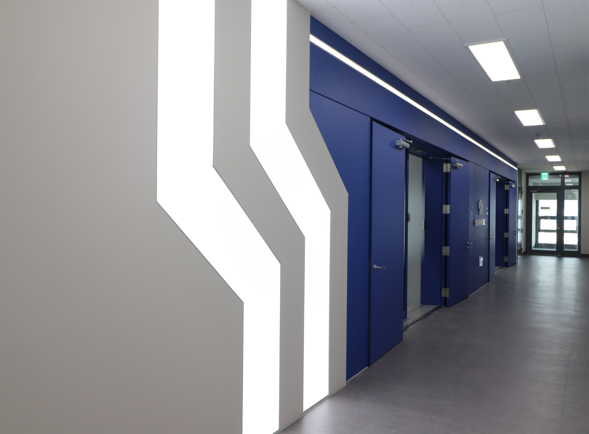
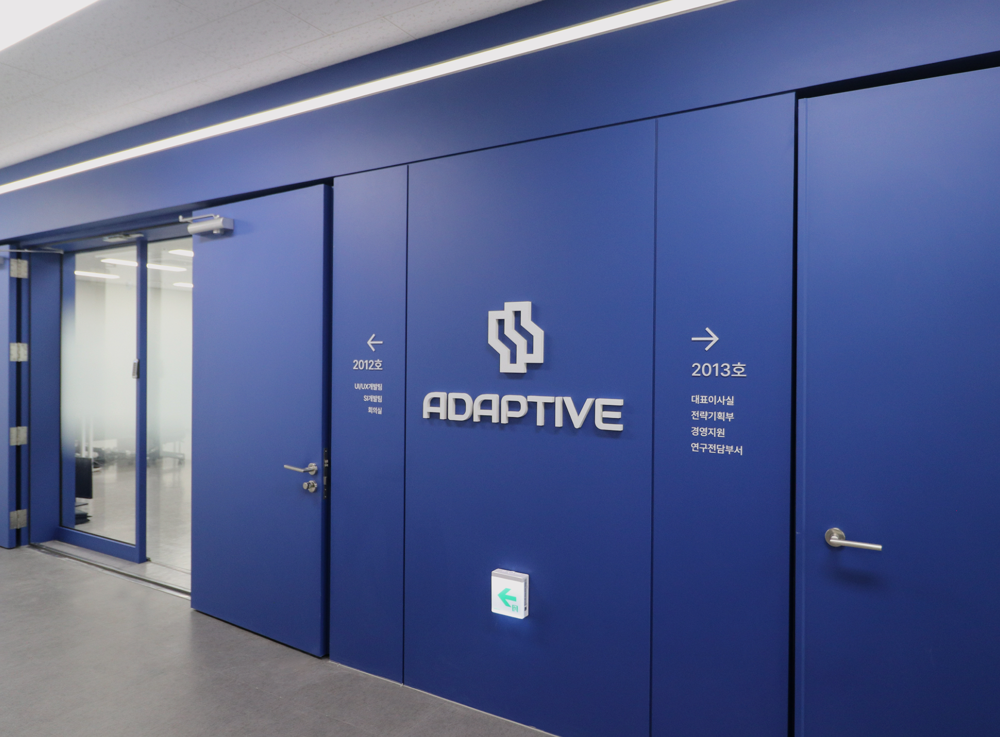
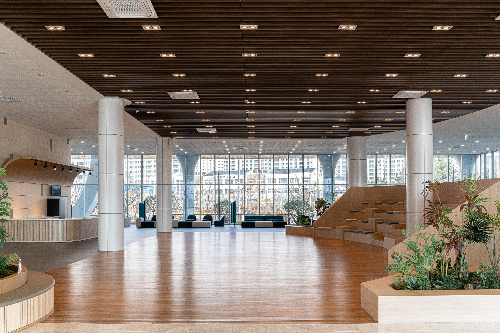
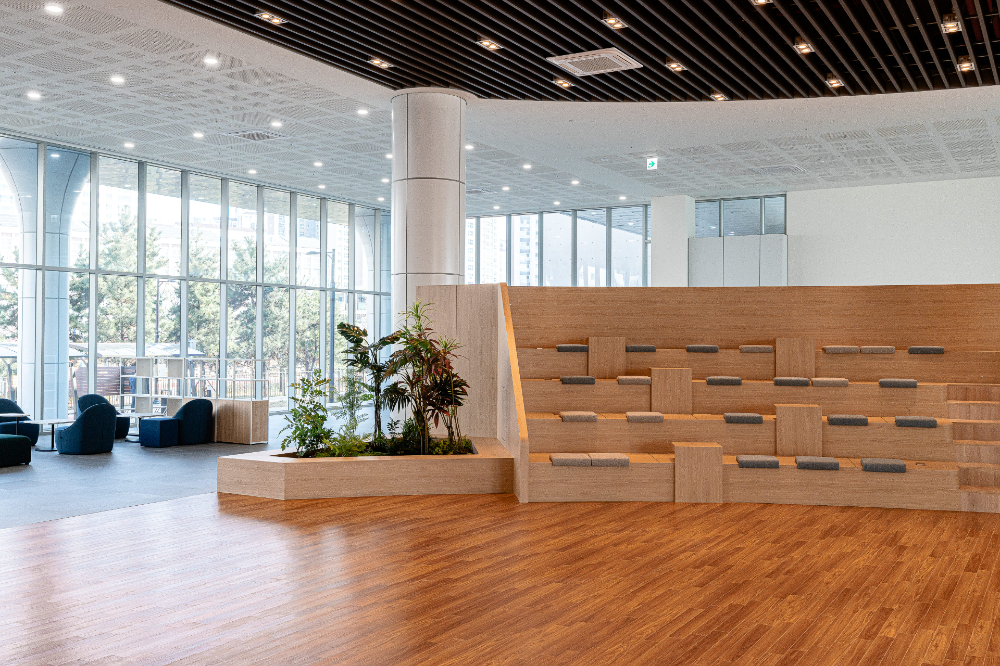

반도아이비플래닛 지식산업센터 사무실 인테리어 가이드
명지신도시 에코델타시티 내 30평대 지식산업센터 인테리어를 계획 중이신가요? 공간 효율성을 극대화하는 레이아웃 설계와 트렌디한 디자인 팁을 정리해 드립니다.
반도아이비플래닛 입주사를 위한 예산 중심&하이엔드 사무실 인테리어. 업무 효율과 기업 가치를 높이는 프리미엄 시공을 제안합니다.
지식산업센터 및 사무실 공간 인테리어 가이드

명지신도시 에코델타시티 내 30평대 지식산업센터 인테리어를 계획 중이신가요? 공간 효율성을 극대화하는 레이아웃 설계와 트렌디한 디자인 팁을 정리해 드립니다.

반도아이비플래닛 지식산업센터 40평대 사무실 입주를 앞둔 분들을 위한 핵심 체크리스트. 예산 설정부터 설계 도면 검토까지 한눈에 알아봅니다.

50평대 지식산업센터 인테리어 진행 시 시행착오를 줄이는 팁입니다. 반도아이비플래닛 지식산업센터 3D디자인의 필요성과 레이아웃 설계 팁을 다룹니다.

명지신도시 및 에코델타시티 인근 60평대 지식산업센터 사무실 인테리어 업체를 성공적으로 선정하기 위한 기준과 전문 설계 팁을 제공합니다.

에코델타시티 내 70평대 대형 사무실 인테리어 트렌드 분석. 효율성과 개방감을 모두 갖춘 완벽한 평면도 및 디자인 팁을 공유합니다.

반도아이비플래닛 지식산업센터 80평대 대형 평수의 최적의 오피스 레이아웃 제안. 3D 설계를 활용한 스마트 오피스 구축 방안을 제시합니다.

명지신도시 및 반도아이비플래닛 90평대 대규모 사무실 인테리어를 위한 핵심 체크리스트. 스마트한 동선 설계와 예산 최적화 방안을 알아봅니다.

반도아이비플래닛 지식산업센터 100평대 이상의 하이엔드급 대형 지식산업센터 인테리어를 위한 프리미엄 자재 제안 및 시공 포인트 가이드입니다.

명지 및 에코델타시티 지식산업센터 인테리어 진행 과정에서 불필요한 예산 지출을 막고 친환경 고급 마감재를 실속 있게 선정하는 팁을 공개합니다.
명지신도시 에코델타시티 반도아이비플래닛 사무실 인테리어 관련 궁금증을 해결해 드립니다.
명지신도시 및 에코델타시티 지식산업센터 인테리어 진행 시 소방 법규 준수는 필수적입니다. 스프링클러 헤드 살수 장애물 제거, 감지기 이설, 소방 완비 증명서 발급 등 전문적인 공무 절차가 필요합니다. 특히 반도아이비플래닛 지식산업센터 인테리어 시 사전 관리사무소 신고 및 승인 후 착공해야 소방 검사를 원활히 마칠 수 있습니다.
에코델타시티 사무실 인테리어 비용은 설계 디자인, 마감재 등급, 가벽 구성 방식에 따라 다양합니다. 일반적인 30평대에서 50평대 지식산업센터의 경우 평당 100만 원 중반대에서 하이엔드 설계 시 평당 200만 원 초반대까지 형성됩니다. 반도아이비플래닛 사무실 인테리어 시 무료 3D 시뮬레이션을 제공하는 전문 업체를 통해 세부 적산 내역서를 꼼꼼히 확인하고 진행하는 것을 추천합니다.
네, 반도아이비플래닛 지식산업센터 3D디자인 설계는 마감재 질감, 전기 배선, 가구 배치 등 완성 모습을 사전에 확인하고 공사 중 변경 사항을 예방하기 위해 반드시 필요합니다. 도면 설계만으로 파악하기 힘든 공간감을 미리 검토하여 예산 낭비를 막을 수 있습니다.
일반적으로 30평대~50평대 기준, 설계 및 소방 인허가 승인 단계(약 1~2주)를 포함하여 실제 시공 기간은 약 3~4주 정도 소요됩니다. 100평대 이상의 대형 공간의 경우 파사드 연출, 회의실 방음벽체 시공 등 추가 공정이 포함되므로 약 5~6주가량 소요됩니다.
네, 그렇습니다. 에코델타시티 및 반도아이비플래닛 지식산업센터 인테리어 시 소방 지침에 부합하도록 스프링클러 이설, 감지기 증설, 시각경보기 및 피난구유도등 위치 변경 등을 전문 소방 설비 업체를 통해 일괄 진행하여 준공 승인을 안전하게 받아드립니다.
저희 인디컴퍼니는 준공 후 기본 1년간 무상 하자보수(A/S) 기간을 제공하며, 서울보증보험을 통한 하자보수보증증권 발급이 가능합니다. 에코델타시티 및 명지신도시 내 시공 건의 경우 신속한 출동 및 대응 시스템을 구축하고 있어 문제 발생 시 즉각 대처해 드립니다.
건설산업기본법에 따라 공사 예정 금액이 1,500만 원 이상인 실내건축공사(인테리어)를 진행할 때는 반드시 정식 등록된 실내건축공사업(전문건설업) 면허를 보유한 업체를 통해 시공하셔야 법적 보호를 받으실 수 있습니다. 만약 면허가 없는 무면허 업체와 공사 계약을 체결할 경우 다음과 같은 심각한 피해를 볼 수 있으니 각별히 유의해야 합니다.
따라서 인테리어 계약 전 반드시 국토교통부의 KISCON(건설산업지식정보시스템)을 통해 정식 실내건축공사업 면허 보유 업체인지 조회해보아야 합니다. 면허 보유 및 하자보증이 확실히 검증된 법인인 인디컴퍼니 같은 신뢰도 높은 전문 업체를 통해 시공을 안전하게 의뢰하시는 것을 추천합니다.
인디컴퍼니 공식 홈페이지 및 추천 채널 정보 링크입니다.